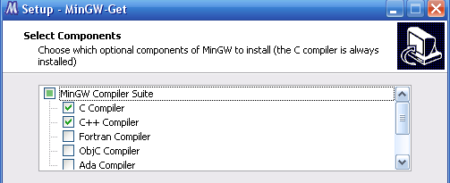
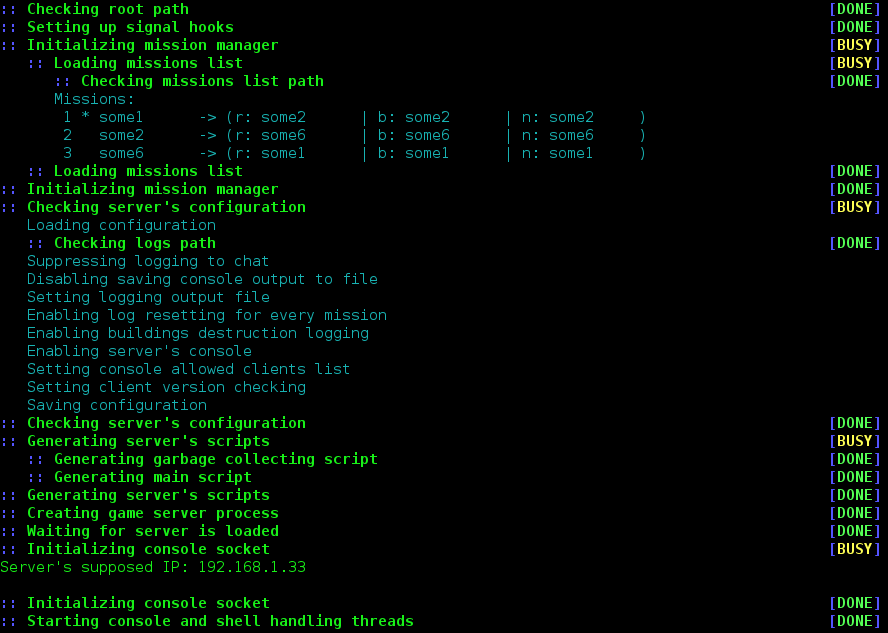
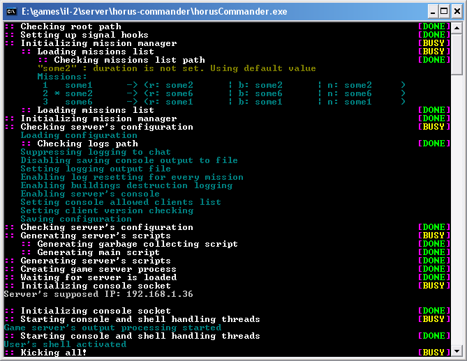

Current version: 0.4.1
Contents
- About
- Features
- Shell commands
- Pilot requests
- Installation
- Configuring
- Missions management
- Launching
- Changing language
- Developer's API
About
Horus-commander is a Horus subsystem which communicates with IL-2 Dedicated Server directly. Loading missions, responding to pilot's requests, collecting their statistical data and tracking mission progress are the main purposes of the commander. It extends facilities of the Dedicated Server.
Features
- Game Server's process full maintenance: start, stop, autorestart. Once you have started commander, it will start server and will try to restart it in case of server shuttdown. Exiting commander will also stop server.
- Suppressed server's output: no messy messages, no console logging, events logging turned on only for current mission. So, you do not have to worry about your disk space.
- Flexible missions management.
- C-language native code for Linux and Windows: run commander without emulations, take maximum performance.
Shell commands

- Chatting:
chall <message> send message to everybody chusr <user> <message> send message to user charm <army> <message> send message to army: - "none", "n", "0" - army none;
- "red", "r", "1" - army red;
- "blue", "b", "2" - army blue.
- Missions management:
mload load current mission muload unload current mission mrun run loaded mission mend end loaded mission mrerun end and run mission again without file reloading mstart load and run current mission mstop end and unload current mission mrestart stop and start mission again with file reloading mnext interrupt and stop current mission. Select next and start it mprev interrupt and stop current mission. Select previous and start it. Missions history can contain up to <HISTORY_SIZE> missions. mtl print mission time left mtl set <time> set mission time left in H:M:S format (e.g., 1:20:00) - Other:
exit stop server and exit commander
Pilot requests
All pilot requests are starting with <CNSL_CMD_PREFIX>.
- Time requests:
`mtl tell how much mission time left
Installation
Linux
1. Install next packages:
- git (not necessarily)
- gcc (>=4.7.0)
- automake (>=1.11.3)
- m4 (>=1.4.16)
- autoconf (>=2.68)
- libtool (>=2.4.2)
- gettext + gettext-dev (>=0.18.1)
- qt (>=4.8.1) + qt-creator
- wine
2. Download ZIP archive and unpack it or clone Horus repository to any directory:
git clone https://github.com/oblalex/horus.git
3. Go to horus-commander subdirectory:
cd horus/commander
4. Create 'configure'
autoreconf -if
5. Create directory for buildings and go into it:
mkdir build && cd build
6. Run 'configure':
../configure --prefix=/path/to/your/il-2/server/directory
7. Build and install horus-commander:
make && make install-strip
Windows
- Download precompiled binaries for 32-bit Windows and unpack it to server's directory. If you are user and you just want to get everything working out-of-box, then this choise is right for you. Just get binaries and go to the missions management section.
- If you are developer then you will need to build project from sources :
1. Install MinGW: select latest version and download binary executable (e.g., mingw-get-inst-20120426):
2. Install pkg-config:
- Download pkg-config.exe from GTK+ for Windows.
- Then you can simply unzip this downloaded zip-file, and then copy the "pkg-config.exe" executable into "C:\MinGW\bin"
- Download pkg.m4.
- Unzip this zip, and then copy the "pkg.m4" executable into "C:\MinGW\share\aclocal"
- Now you have to download GLib DLL too, always from GTK+ for Windows.
- Once again, you have to unzip this downloaded zip-file, and then copy liglib-2.0-0.dll into "C:\MinGW\bin"
- And at last, go to "C:\MinGW\bin" and copy "libintl-8.dll" to "intl.dll"
3. Install PCRE library to MinGW environment:
- Get Developer files.
- Copy files from "include" to "C:\MinGW\include" directory.
- Copy files from "lib" to "C:\MinGW\lib" directory.
4. Install Qt libraries and Qt Creator or just Qt SDK which is much more heavy.
5. Download ZIP or TAR archive and unpack it to any directory.
6. Run MinGW shell (find it in the applications menu).
7. Update PATH variable by adding path to Qt libraries and to "qmake". Case of working with Qt SDK is shown below.
echo "export PATH=/c/QtSDK/Desktop/Qt/4.8.1/mingw/bin:\$PATH" >> ~/.inputrc source ~/.inputrc # Apply changes qmake -v # Check qmake version
8. Navigate to directory with Horus Commander sources:
cd /drive_letter/path/to/horus/sources cd commander
9. Make sure "configure.ac" has right format:
dos2unix configure.ac
10. Configure, build and install in similar to Linux way:
autoreconf -if mkdir build && cd build ../configure --prefix=/path/to/your/il-2/server/directory make && make install-strip
11. Copy next MinGW and Qt libraries and PCRE binaries to your builded "horus-commander" directory:
- libgcc_s_dw2-1.dll
- libstdc++-6.dll
- libiconv-2.dll
- libintl-8.dll
- pcre3.dll
- pthreadGC2.dll
- mingwm10.dll
- QtCore4.dll
- QtGui4.dll
- QtXml4.dll
Configuring
Configuring can be easily done by using "Horus Config" tool.
On "General" tab you can set server's name and description. They will be shown to user after connection to your server. Also they will be shown to user if he select server from local servers list or from Xfire servers list if you have added it there.
On "Difficulty" tab you can obviously set server's difficulty. Subtabs are identical to in-game tabs. You are definitely familiar with them. "Easy", "normal" and "real" predefined settings are available too. See slides below.
Network settings can be set on the corresponding tab.
Meaning of the parameters:
| Skin download | Show user's custom skins to others |
| Check client time speed | Speedhack protection on the client side |
| Check server time speed | Speedhack protection on the server side |
| Check time speed differense | Allowed hours difference between server and client |
| Check time speed interval | Hours difference control interval |
| Far max lag time | Maximum time delay (in seconds) between packets received from a particular client. Interval greater than this value is considered to be a "cheat". |
| Near max lag time | Maximum time delay, when the plane is attacked or when it poses a threat to enemy aircraft. Delay which is greater than this value is considered to be a "cheat". |
| Cheater warning delay | Time interval between warnings about cheating. |
| Cheater warning number | Number of warnings which will be showed to user before kicking him from server. |
| Server channels | Maximum number of connections at the same time |
| Local port | The port number which the server will use to listen connections. This value will be used by users to connect to server. |
Missions management
To activate missions management you must have "missions.xml" file in the root directory of horus commander. You do not need to create it manually. Use Missions List Editor (MLE) instead. You will see how to use it a bit later. An example of file you can see below right now. Also you can take a look at related shell commands.
<?xml version="1.0" encoding="utf-8"?>
<missions>
<mission
name="Test-mission-1"
path="Net/dogfight/test/1.mis"
duration="7200"
isCurrent="1"
next="Test-mission-2"
nextRed="Test-mission-2"
nextBlue="Test-mission-2" />
<mission
name="Test-mission-3"
path="Net/dogfight/test/2.mis"
duration="3000"
next="Test-mission-1"
nextRed="Test-mission-1"
nextBlue="Test-mission-1" />
<mission
name="Test-mission-2"
path="Net/dogfight/test/3.mis"
duration="3600"
next="Test-mission-3"
nextRed="Test-mission-3"
nextBlue="Test-mission-3" />
</missions>
As you can see, this file describes 3 missions linked in a circle. It's graphical representation is shown below (T-M is for Test-Mission). The order of definitions does not matter.
Let's see what each attribute stands for:
| name | mission's name used to reffer to it. Mandatory and must be unique, otherwise mission will be excluded from the list |
| path | path to the mission with root in server's "Missions" directory. Mandatory and must be correct, otherwise mission will be excluded from the list |
| duration | mission's duration in seconds. <DEFAULT_MISSION_DURATION> will be used if this attribute is not set |
| isCurrent | tells that this mission is current. It will be loaded and played. Only one mission can be set as current, otherwise the last current mission will be selected |
| next | (black arrow) tells which mission will be played next if mission is interrupted, or "nextRed" and "nextBlue" not defined, or no team has wone current mission |
| nextRed | (red arrow) tells which mission will be played next if red team has wone current mission. "next" value will be used if "nextRed" not specified |
| nextBlue | (blue arrow) tells which mission will be played next if blue team has wone current mission. "next" value will be used if "nextBlue" not specified |
Targets support is now available yet, so "nextRed" and "nextBlue" has no sense now. This will be surely changed in future. Specifying only "next" attribute is normal and such list description is quite valide:
<?xml version="1.0" encoding="utf-8"?>
<missions>
<mission
name="Test-mission-1"
path="Net/dogfight/test/1.mis"
isCurrent="1"
next="Test-mission-2" />
<mission
name="Test-mission-2"
path="Net/dogfight/test/3.mis"
next="Test-mission-3" />
<mission
name="Test-mission-3"
path="Net/dogfight/test/2.mis"
next="Test-mission-1" />
</missions>
And it's representation:
Try to avoid such situations:
Such list is not good because it will be played only once. Also avoid such lists:
Missions 4, 5 and 6 will be excluded from the list because they have no refences to themselves. Even mission 5 will be deleted after mission 4. And at last, this list can be said to be pretty good:
Video below shows how you can edit mission list using Horus MLE.
Launching
It is recommended to have only one network adapter to be turned on. If you have wired and wireless or some phisical and virtual adapters working together then server's IP-address might not be recognized properly. Make sure you have read and understood the plot of the previous section. File "missions.xml" must be created and contain propper mission list. Nothing will explode if you've got wrong mission list or no list at all, but no mission will be played. This is for sure.
Linux
1. Go to installed horus-commander directory:
cd /path/to/your/il-2/server/directory/horus-commander
2. Start commander:
./horusCommander
You should see such output:
Entering shell command 'exit' will cause to this:

Windows
Launching on Windows is quite similar to described above. Go to installed horus-commander directory and launch "horusCommander.exe". You should see such output:
Changing language
Use Horus Config to change language. Just select it in "Language" box and press "Save". Selected language will be used after restarting commander or/and configurator.
Commander languages exmaples:

Configurator languages exmaples:

Developer's API
You may be also interested in developer's API.